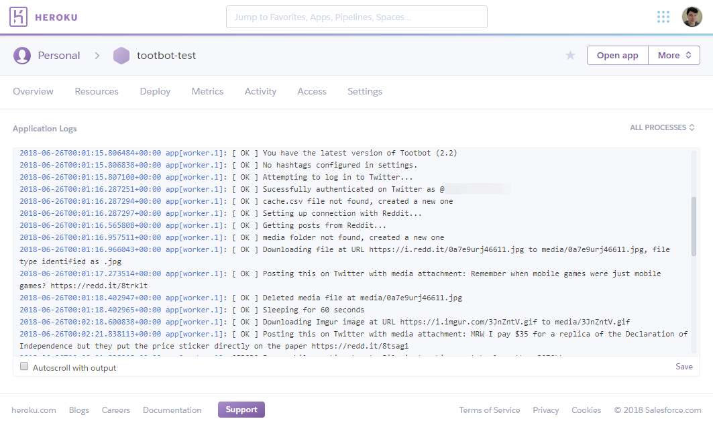

About a year and a half ago, I released the first version of Tootbot (it was called ‘Memebot’ at the time). It’s a Python tool designed to repost Reddit content on Twitter and Mastodon, with automatic media embedding, advanced filtering, and more. I primarily made it for my own Twitter bots (like @PrequelMemesBot and @ItsMeowIRL), but since it’s open-source, anyone else could use it as well.
After I said I was shutting down my @ItMeIRL bot, the amount of people using Tootbot exploded. Not only were there a dozen clones of the account I was shutting down, but also completely different accounts. There’s one for Fortnite news, one for bossfights, one for the popular comedy show It’s Always Sunny in Philadelphia, and so on.
Even though I’ve made it as easy as possible, setting up Tootbot is still somewhat complicated for people not familiar with Python or managing servers. I mentioned before that I was working on supporting adding Heroku support, which would allow people to set up and manage bots entirely in the cloud.

Starting today, Tootbot can be deployed as a Heroku application! This means you can create a Reddit Twitter bot from scratch in roughly 30 minutes, and have it run in the cloud 24/7 for free. No installing Python, no leaving your computer on all day.
I’ve written detailed instructions for setting up a new bot in Heroku and moving an existing bot to Heroku. At the moment, posting to Mastodon is not supported, but I definitely want to add that feature soon. Tootbot can still be run locally on your computer/server/VPS as well.
If you want to be notified when there is a Tootbot update available, there is now an RSS feed you can add to your reader app of choice. You can also subscribe to the feed via email.
If you experience any problems, you should create an issue on the GitHub repository and I’ll do my best to help.